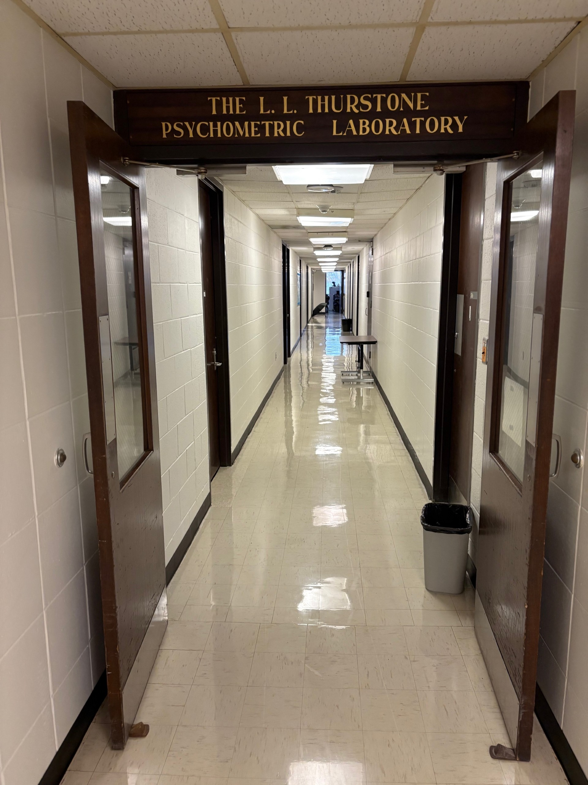
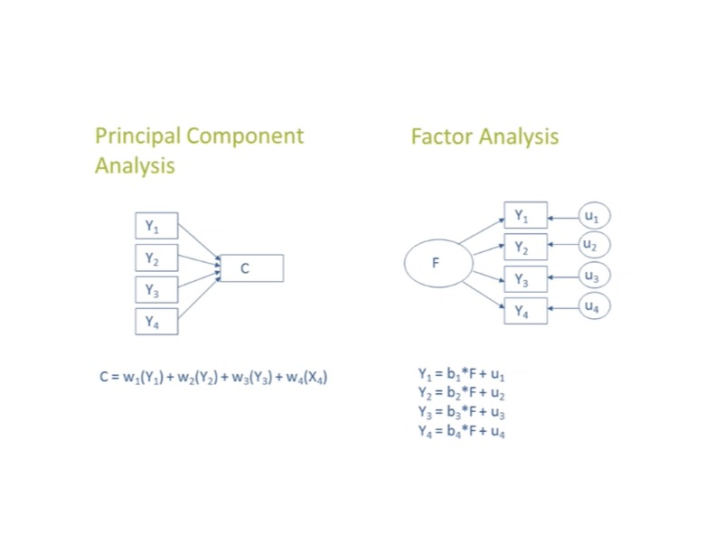

A brief history: from questionnaires to components
PCA and factor analysis
What PCA does, on the fifty Big Five items
The road to the Big Five
PCA in R with prcomp()
Choosing the number of components
Scores, loadings, and rotation
Using, checking, and reporting a PCA
Where We Have Been
The last two lectures were about clustering. K-means and hierarchical clustering both took \(n\) people measured on \(p\) variables and sorted the people into groups.
That was person-centered. The output was one new column: a group label for each person.
Today we work on the columns instead of the rows.
Principal components analysis (PCA) takes the same kind of data and builds a small number of new variables that carry most of the information in the original \(p\). The output is a few new columns, with a weight for every original variable.
Two Kinds of Unsupervised Learning
Clustering
Dimension reduction
Works on
Rows (people)
Columns (variables)
Asks
Are there groups of similar people?
Can a few new variables stand in for many?
Output
A group label for each person
A score for each person on each new variable, and a loading for each old variable
Methods
K-means, hierarchical, mixture models
PCA, factor analysis, autoencoders
Both are unsupervised. There is still no \(y\), so there is still no test set error. We judge a PCA by how much variance it keeps, how stable it is, and whether the components are useful.
Why Psychologists Reduce Dimensions
Many correlated items. A questionnaire has 50 items, but nobody believes it measures 50 different things. A few summary scores are easier to use and easier to explain.
Too many predictors. Regression and clustering struggle when predictors are highly correlated or when there are many of them relative to the sample size.
Noise. The last few components mostly carry random error. Keeping only the first few can filter some of it out.
Pictures. Two components can be plotted. Fifty variables cannot.
Structure. Which items go together? That question built the Big Five.
PCA returns components whether or not they mean anything. Deciding whether they do is the hard part, just as it was with clusters.
Questionnaires Made the Problem
On the first day we saw that psychology has had more data than it could handle since the 1890s, and that questionnaires were the reason.
G. Stanley Hall circulated more than 200 questionnaires between 1894 and 1915, on topics from anger to dolls. By 1896 over one hundred thousand had come back, some of them forty or fifty pages long.
Hall wanted “a composite photograph” of each construct. His problem was getting there: “When these returns come in, one at first feels helpless before them” (Hall, 1897, quoted in Young, 2018).
The First World War brought mass testing of army recruits, tests with restricted answer sets, and new statistical techniques. Those fed Thurstone’s and Likert’s scaled questionnaires, including the Likert scale (Likert, 1932).
Hall wanted a composite photograph of each construct. A principal component is one way to take it: a weighted combination of many items, chosen by a rule.
From Answers to a Correlation Matrix
Scaled answers changed what could be computed.
Once every answer is a number on the same scale, every pair of items has a correlation. Fifty items give 1,225 of them.
The correlation matrix is the raw material. Items that go together correlate, and items that do not stay near zero.
The questions psychologists began asking of that matrix are the questions PCA answers. How many things does this questionnaire measure? Which items belong to which? How should a person’s answers be combined into a score?
The other half of the first day’s story comes along too. Young (2018) calls it the move from thick to thin description: a person’s experience becomes a number on a scale. A component score goes one step further and turns fifty of those numbers into one.
One Factor or Several
1904: one general factor
Charles Spearman noticed that scores on different mental tests were all positively correlated, and argued they shared one underlying factor, which he called g.
Mathematically he was pulling one dominant dimension out of a correlation matrix, close to what the first principal component does.
1930s: several factors and simple structure
Louis Thurstone argued for several broad abilities instead of one: verbal, spatial, numerical, and so on.
He showed that the axes through a correlation matrix can be turned without changing how much variance they explain, and chose the position where each test loads on one factor. He called that pattern simple structure.
One factor or several was partly a question of where the axes sat. That choice comes back later today as rotation.
Thurstone at Carolina
Thurstone moved to UNC in 1952 and founded the Psychometric Laboratory here. It now carries his name and is still on the second floor of Davie Hall.

L. L. Thurstone Lab in Davie Hall
A Brief History: PCA Takes Shape
1933: principal components formalized
Harold Hotelling defined principal components in the modern sense: new uncorrelated variables, each a weighted combination of the originals, ordered so that each explains as much of the remaining variance as possible.
Karl Pearson had described the geometry in 1901, as the line of closest fit to a cloud of points.
Mid 20th century: personality and tests
By the 1950s and 1960s PCA and factor analysis were being run on personality items, attitude scales, and symptom checklists.
The question was always the same. Give people a long questionnaire. Do the items fall into a small number of broad traits?
The Big Five came out of this work.
Late 20th century: a routine tool
Cognitive and clinical research: summarize many correlated measures into a few scores, such as internalizing and externalizing symptom dimensions.
Machine learning: compress and decorrelate predictors before regression, classification, or clustering.
A Question Before We Go On
Turn to a neighbor and take three minutes.
Hall wanted “a composite photograph” of each construct. What would a composite photograph of extraversion be made of, and who decides what goes into it?
A component score turns a person’s fifty answers into one number. What does that number stand for? What was thrown away to get it?
Spearman found one factor in ability tests. Thurstone found several in the same kind of tests. Can both be right? Are components found in the data, or chosen by the analyst?
Hold onto your answer to the third question. The same choice comes back later today when we rotate the Big Five components.
PCA
A data reduction technique.
Builds new variables, the components, as weighted combinations of the original variables.
Chooses the weights to capture as much total variance as possible.
Uses all of each variable’s variance: what it shares with other variables, what is unique to it, and error.
The components are directions in the data. They are not assumed to be real psychological traits. Interpretation is optional and comes after the fact.
Factor Analysis
A latent variable model.
Assumes unobserved constructs, the factors, cause the correlations among the observed variables, and tries to recover them.
Models only the common variance that variables share. Unique variance and error are set aside.
The factors are interpreted as constructs from the start: negative affect, working memory, and so on. Psychological meaning is the point.
Next lecture.
The Same Picture, Two Models

PCA and factor analysis
In PCA the arrows run from the items to the component. The component is built from the items.
In factor analysis the arrows run from the factor to the items. The factor is assumed to produce the item responses, plus error.
What PCA Does
Start with \(p\) variables measured on \(n\) people. PCA builds \(p\) new variables, the principal components.
Each component is a weighted sum of the original variables.
The first component, PC1, is the weighted sum with the largest possible variance.
PC2 has the largest variance among weighted sums that are uncorrelated with PC1. PC3 is uncorrelated with both, and so on.
Together the \(p\) components hold all the variance in the data. The first few usually hold most of it, and those are the ones we keep.
PCA is unsupervised. It never sees an outcome. It only looks at how the variables relate to each other.
On the Fifty Items
Each person in the Big Five data is a row of 50 answers. Applied to those items, the rule gives 50 components. The first one is
Every item appears in the formula with its own number, so the full version has 50 terms. The numbers are chosen so that this sum has more spread across people than any other weighted sum of the 50 items.
A person’s score on PC1 is their 50 standardized answers, each multiplied by its number, added up. One value in place of 50.
PC2 has its own 50 numbers and its own score for each person, and so on down to PC50.
The components are mathematical objects. Sometimes they look like traits, but PCA is not a measurement model and does not promise that they will.
Fifty In, Fifty Out, Five Kept
PCA always returns as many components as there are items. Nothing has been reduced yet.
The 50 components carry the same information as the 50 items, written on new axes. The variances of the components add up to the variances of the items: 50 either way, after standardizing.
What changes is how the variance is spread out. The items share it evenly, one unit each. The components do not. The first few hold most of it, and the last ones hold almost none.
The reduction is a decision, not part of the method. We keep the first few components and drop the rest. Each person is then described by a handful of scores instead of 50 answers, and most of the variation is still there.
So the questions for the rest of the lecture are how many to keep, and what the kept ones mean.
The Vocabulary
Term
What it is
In prcomp()
Scores
Each person’s value on each component. These are the new variables.
$x
Proportion of variance
The share of the total variance that one component holds.
summary()
Loading
The correlation between an item and a component.
computed by hand
The word loading is used loosely. Some books and packages use it for the raw numbers in the component formula. On this page a loading is always a correlation, so it runs from \(-1\) to \(1\).
Standardize First
PCA chases variance. A variable with a large spread gets a large share of the first component just because of its units.
Height in centimeters and weight in kilograms would give a first component that is mostly height.
The 50 Big Five items share a 1 to 5 scale, but their spreads still differ, as we saw in the K-means lecture.
So standardize every variable first. In prcomp() that is scale. = TRUE. The analysis then runs on the correlation matrix, and every item starts with a variance of 1.
The only time not to standardize is when the variables share meaningful units and you want the ones with more spread to count more.
The Road to the Big Five
Start with language, not theory
Allport and Odbert (1936) went through an English dictionary and pulled out thousands of adjectives that describe people: talkative, organized, anxious, creative, and so on.
Later researchers had people rate themselves, or peers, on hundreds of these adjectives.
Rows are people. Columns are adjectives. The problem is how to make sense of hundreds of traits at once.
Which adjectives move together?
People who call themselves talkative, energetic, and assertive also tend to say outgoing.
People who call themselves organized, reliable, and careful also tend to say self-disciplined.
PCA and factor analysis turn these bundles into a few summary dimensions. Instead of 200 adjective scores a person has a position on each dimension.
The Big Five
Across many studies, item sets, and samples, the same five broad dimensions kept showing up.
Neuroticism, or its reverse, emotional stability: anxious, moody, easily upset.
Openness, or intellect: curious, imaginative, open to new ideas.
The questionnaire in our data was written to measure these five, with ten items each. Later today we will see whether the five come back out of the data.
Modern Takes on the Big Five
Not always five. Different item sets, languages, and cultures do not always give five dimensions. The structure may reflect English adjectives and Western samples more than a universal map of personality.
Description, not explanation. A high neuroticism score says how a person differs from others. It does not say why: biology, development, stress, culture, roles. The traits are statistical summaries, not causal theories.
Too broad for some uses. Two people can both be high on neuroticism while one is mostly anxious and the other mostly angry. Traits also shift across situations. For clinical work and intervention, five broad dimensions can be too coarse.
These are limits of what the dimensions mean, not of the method that found them. The same cautions will apply to any component we name today.
PCA in R
We will run PCA with prcomp(), which is built into R, so there is nothing to install.
The book runs the same analysis with the h2o package. h2o needs Java and is built for very large data. On data of this size prcomp() finds the same components.
The data are the same Big Five responses as the K-means lecture: 1,000 people, 50 IPIP items, each rated from 1 (disagree) to 5 (agree). The codebook is at the end of this page.
Four steps, each one a decision you would report.
Prepare the data.
Run the PCA.
Choose the number of components.
Interpret the components, with rotation if needed.
Step 1: Prepare the Data
A 0 means the person skipped the item. As in the K-means lecture, we keep only the people who answered every item.
# a 0 means the item was skipped, so keep only complete rowscomplete <-apply(data, 1, function(r) all(r %in%1:5))data <- data[complete, ]dim(data)
[1] 857 50
One difference from the K-means lecture: we do not reverse the negatively keyed items or average them into trait scores. PCA gets all 50 raw items and has to find the structure itself.
Step 2: Run the PCA
Two arguments of prcomp() matter here.
center = TRUE subtracts each item’s mean. This is the default.
scale. = TRUE divides each item by its standard deviation. The default is FALSE, so set it yourself.
my_pca <-prcomp(data, center =TRUE, scale. =TRUE)
The result holds three pieces we will use.
my_pca$sdev, the standard deviation of each component. Squared, these are the eigenvalues.
my_pca$rotation, the weights that turn the 50 items into each component.
my_pca$x, each person’s score on each component.
The Summary Table
With 50 items there are 50 components. The summary shows how much variance each one explains. Here are the first ten.
Proportion of Variance is the share of the total variance that one component explains. PC1 explains 15 percent.
Cumulative Proportion adds those shares up from the first component onward.
The shares fall off quickly at first and then level out. That shape is what the next step works with.
Step 3: How Many Components?
PCA always returns \(p\) components. The point is to keep fewer than \(p\), so we need a rule. Three are common, and none is decisive, much like choosing \(K\) in a cluster analysis.
The scree plot. Look for the point where the variance explained flattens out.
The eigenvalue rule. Keep every component with an eigenvalue of 1 or more.
Cumulative variance. Decide how much variance you need, and keep enough components to reach it.
Theory counts too. The questionnaire was written to measure five traits.
The Scree Plot
Plot the proportion of variance explained (PVE) by each component.
The curve falls steeply through the first five components.
There is a clear drop between the fifth and the sixth, and the curve is nearly flat after that.
The scree plot points to five components.
The Eigenvalue Rule
A component’s eigenvalue is its variance. Each standardized item has a variance of 1, so a component with an eigenvalue above 1 explains more variance than a single item does. The rule keeps those and drops the rest.
eigen <- my_pca$sdev^2# the eigenvalues add up to the number of itemssum(eigen)
[1] 50
# the components with an eigenvalue of 1 or morewhich(eigen >=1)
[1] 1 2 3 4 5 6 7 8 9 10
The rule keeps 10 components, twice as many as the theory behind the questionnaire.
This is typical. With many items the eigenvalue rule tends to keep too many components.
Components 6 to 10 only just clear the bar. Their eigenvalues run from 1.57 down to 1.03.
Cumulative Variance
Decide how much of the total variance you need to keep, and take enough components to reach it. The plot has two panes.
Top pane. The scree plot again. Each point is the share of the variance that one component holds on its own, so the points fall as you move right.
Bottom pane. The running total. Each point is the share you keep if you stop at that component. It is the top pane added up from the left, so it always rises, quickly at first and then more slowly as the components get smaller. The 50th point is 1.
To use it, pick a target on the vertical axis of the bottom pane and read across to the curve. Half the variance takes 7 components. The first five give 46 percent, and reaching 80 percent would take 25 components.
The Decision
Rule
Keeps
Scree plot
5
Eigenvalue rule
10
80 percent of the variance
25
Theory behind the questionnaire
5
The three rules disagree, which is normal. We keep five, because the scree plot and the theory behind the questionnaire agree.
Five components explain less than half the variance in the 50 items. That is not a failure. Single questionnaire items are noisy, and much of what is dropped is item specific.
Report the number you kept and the rules that disagreed, as with \(K\).
Step 4: Component Scores
Every person gets a score on every component. These scores are the new variables you would hand to a regression or a cluster analysis in place of the 50 items.
Components are mathematical objects, but we can try to read them by looking at which items they lean on most. If the questionnaire works as designed, the first five components should line up with the five traits.
A loading is the correlation between an item and a component.
We get the loadings by multiplying each component’s weights by its standard deviation.
Fifty rows of five numbers is too many to read, and the item codes do not say what anyone was asked. The plots that follow show every loading with the item wording beside it. The full list is also at the end of this page.
item statement
1 EXT1 I am the life of the party.
2 EXT2 I don't talk a lot.
3 EXT3 I feel comfortable around people.
4 EXT4 I keep in the background.
5 EXT5 I start conversations.
6 EXT6 I have little to say.
The Loadings Heatmap
We will draw the heatmap twice, so the code goes in a function.
The items are in order by trait: ten EXT items at the top, then EST, AGR, CSN, and OPN.
Red and blue both appear inside a trait because some items are worded in the opposite direction. “I am the life of the party” and “I don’t talk a lot” are both extraversion items, and they load with opposite signs.
The sign of a whole component is arbitrary. Flipping every sign in a column gives an equally good component.
To check the match with the five traits, find the component each item loads on most strongly, and count by trait.
The first component is chosen to explain as much variance as possible, so it picks up whatever the traits share.
The second component does the same with what is left over, and so on.
These components are a good summary for prediction. They are not designed to be easy to name.
If the goal is a compact set of predictors, stop here. If the goal is to name the components, there is one more step.
Rotation
The Big Five are in these data. To see them we rotate the components.
The first five components define a five dimensional space. We can turn the axes inside that space without changing how much variance the five explain together.
A varimax rotation looks for the axes where each item loads strongly on one component and weakly on the others.
Thurstone called this pattern simple structure. Varimax, introduced by Kaiser in 1958, is the most common way to find it.
After rotation, 49 of the 50 items load most strongly on the component for their own trait.
The exception is AGR10, “I make people feel at ease.” It loads on the extraversion component and on the agreeableness component, which makes sense for an item about being good with people.
The five rotated components explain 46 percent of the variance, the same as the five unrotated components.
So the Big Five do emerge from these 50 items. The unrotated components hid them, because PCA maximizes variance and does not aim for components that are easy to name.
Rotated Scores and the Trait Scores
Rotation turns the scores as well as the loadings. Standardize the five scores and apply the same rotation matrix.
In the K-means lecture we built five trait scores by hand: reverse the negatively keyed items and average each trait’s ten items. How close are the rotated components to those?
The ten EXT items sit at the two ends, far from everything else.
The five at one end are worded toward extraversion, and the five at the other end are worded away from it.
Most of the other 40 items are near zero. The one closest to the EXT items is AGR10, the exception from the table above.
Using the Components
The scores are ordinary variables now. Three common uses:
As predictors. Regress an outcome on the first few components instead of on 50 correlated items. This is principal components regression, and it is one answer to multicollinearity.
As clustering inputs. The K-means lecture clustered on five hand built trait scores. The five rotated components would do the same job without a scoring key.
As a picture. Plot PC1 against PC2 to see the whole sample on one screen, colored by anything you like.
One caution for prediction. The components are chosen to explain variance in the predictors, not to predict \(y\). A low variance component can still be the one that matters for the outcome.
Small Group Activity: Reading the Components
In groups of three or four, take ten minutes on the questions below. Pick one person to report back. Use the heatmaps, the trait tables, and the correlation with the trait scores as your evidence.
Name the components. Give each of the five rotated components a name. For each one, point to the loadings that support the name and to any item that does not fit.
Fix the sentence. A colleague writes, “PC1 is extraversion.” Using the unrotated table, say what is wrong with that sentence and rewrite it.
Rotate or not. Suppose the goal is to predict college GPA from the 50 items. Does it matter whether you rotate? Suppose instead the goal is to argue the questionnaire measures five traits. Does it matter now?
When we come back together, each group reports its five names from question 1 and its answer to question 3.
When PCA Misleads
PCA always runs, so the failures are quiet ones.
Scale. Without standardizing, the variables with the largest units own the first component.
Outliers. A few extreme people can pull a component toward themselves, because variance squares the distance.
Straight lines only. Components are linear combinations. Curved structure in the data is spread across several components.
Ordinal items. We treated 1 to 5 ratings as numbers. That is standard practice and usually fine, but it is an assumption.
Components are not constructs. A clean rotated solution is evidence about this sample and these items. It is not proof that a trait exists.
The number is a judgment. Two analysts can keep different numbers of components from the same data and both be defensible.
Reporting a PCA
A reader should be able to reproduce the analysis and judge the decisions.
The variables included, the sample size after handling missing data, and whether the variables were standardized.
The number of components kept, the rules you used, and which rules disagreed.
The variance explained by each kept component and by all of them together.
Whether and how you rotated. Varimax is the common default, so say if you used something else.
A loadings table or heatmap for the kept components. Names you give the components are interpretations, so report the loadings and let the names follow from them.
What the scores were then used for.
A PCA is a description of this sample. Whether the components hold up is a question for new data, or for factor analysis.
Summary
PCA builds new uncorrelated variables, each a weighted sum of the originals, ordered by how much variance they explain.
Standardize first. prcomp() with scale. = TRUE does it.
The scree plot, the eigenvalue rule, cumulative variance, and theory can disagree about how many components to keep. Report the disagreement.
Unrotated components are built to explain variance, and they usually blend several traits.
A varimax rotation keeps the same total variance and makes the components easier to name. On these 50 items it recovers the Big Five.
Rotated components are still components. PCA is not a measurement model.
Next time: factor analysis. A model with latent variables that cause the item responses, and the tool to use when the traits are the point.
Big Five Data Info
The data were collected from 2016 to 2018 through an interactive online personality test.
Participants were told at the start that their responses would be recorded and used for research, and were asked to confirm their consent at the end.
All 50 items were shown on one page, and each was rated on a five point scale with radio buttons. The order on the page was EXT1, AGR1, CSN1, EST1, OPN1, EXT2, and so on.
The scale was labeled 1 = Disagree, 3 = Neutral, 5 = Agree. A 0 means the item was skipped.
The file on this site holds 1,000 of the original responses.
Extraversion (EXT)
EXT1 I am the life of the party.
EXT2 I don’t talk a lot.
EXT3 I feel comfortable around people.
EXT4 I keep in the background.
EXT5 I start conversations.
EXT6 I have little to say.
EXT7 I talk to a lot of different people at parties.
EXT8 I don’t like to draw attention to myself.
EXT9 I don’t mind being the center of attention.
EXT10 I am quiet around strangers.
Emotional Stability (EST)
EST1 I get stressed out easily.
EST2 I am relaxed most of the time.
EST3 I worry about things.
EST4 I seldom feel blue.
EST5 I am easily disturbed.
EST6 I get upset easily.
EST7 I change my mood a lot.
EST8 I have frequent mood swings.
EST9 I get irritated easily.
EST10 I often feel blue.
Agreeableness (AGR)
AGR1 I feel little concern for others.
AGR2 I am interested in people.
AGR3 I insult people.
AGR4 I sympathize with others’ feelings.
AGR5 I am not interested in other people’s problems.
AGR6 I have a soft heart.
AGR7 I am not really interested in others.
AGR8 I take time out for others.
AGR9 I feel others’ emotions.
AGR10 I make people feel at ease.
Conscientiousness (CSN)
CSN1 I am always prepared.
CSN2 I leave my belongings around.
CSN3 I pay attention to details.
CSN4 I make a mess of things.
CSN5 I get chores done right away.
CSN6 I often forget to put things back in their proper place.
CSN7 I like order.
CSN8 I shirk my duties.
CSN9 I follow a schedule.
CSN10 I am exacting in my work.
Openness (OPN)
OPN1 I have a rich vocabulary.
OPN2 I have difficulty understanding abstract ideas.
OPN3 I have a vivid imagination.
OPN4 I am not interested in abstract ideas.
OPN5 I have excellent ideas.
OPN6 I do not have a good imagination.
OPN7 I am quick to understand things.
OPN8 I use difficult words.
OPN9 I spend time reflecting on things.
OPN10 I am full of ideas.
The negatively keyed items, the ones worded away from the trait, are EXT2, 4, 6, 8, 10; EST2, 4; AGR1, 3, 5, 7; CSN2, 4, 6, 8; and OPN2, 4, 6. The K-means lecture reversed these before scoring. This lecture did not.